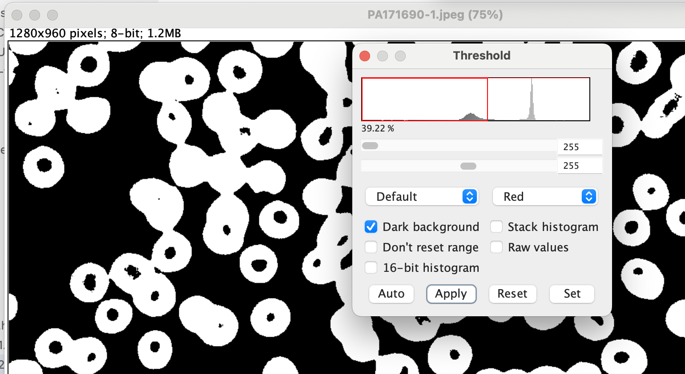

ImageJ is an open-source software designed for image analysis, particularly useful in scientific research and medical imaging. It was developed by Wayne Rasband at the National Institutes of Health (NIH). It's widely used for processing and analyzing images, especially in fields like biology, microscopy, and medical imaging.
The stained cell image is obtained from Kaggle open dataset. Malaria microscopy, microscopic examination of stained blood slides to detect parasite Plasmodium, is considered to be a gold-standard for detecting life-threatening disease malaria. The image is one stained blood cell from this malaria dataset.
To separate objects of interest in the image from the background based on pixel intensity values.
Click Image/Threshold to set up a proper range.
This is a crucial step in image segmentation, which allows you to identify and analyze regions or objects within an image.

Click Analyze/Analyze Particles, set a proper size for the image, here I chose 70 since I would estimate the cells in the picutre would be around 70. Set other parameters like outlier, overlay etc. based on your purpose.
The system provides four outcomes: 1. Summary Report: Offers an overview including the total cell count, total area, average size, integrated density (IntDen), and other key metrics. 2. Results Report: Details metrics for each identified cell individually. 3. ROI Manager: Enables users to customize individual cell selections by adding, deleting, or updating circles. Selecting a specific cell highlights it in the drawing for precise adjustments.
If you have a complete dataset of both healthy and malaria-infected blood cells, Integrated Density (IntDen) can be used for quantitative image analysis to compare the two groups. By analyzing IntDen, you can evaluate differences in fluorescence intensity, which often correlate with variations in biomarker levels or metabolic activity.